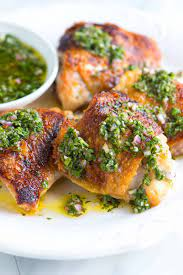

Chimichurri Baked Chicken

Description
Chimichurri is a dish from Argentina that is usually served over grilled chicken
or steak. This is my version, which may or may not be authentic.
Ingredients
- 1/2 cup of finely chopped fresh parsley
- 2 1/2 tablespoons olive oil
- 2 tablespoons chopped fresh oregano leaves
- 1 tablespoon red wine vinegar
- 2 cloves garlic, minced
- 1/4 teaspoon salt
- 1 pinch freshly grounded black pepper
- 1 (3 pound) whole chicken
- teaspoon live oil
- 1 large onion, sliced
- 1/2 chup chicken broth
- 1/2 cup of finely chopped fresh parsley
- 2 1/2 tablespoons olive oil
- 2 tablespoons chopped fresh oregano leaves
- 1 tablespoon red wine vinegar
- 2 cloves garlic, minced
- 1/4 teaspoon salt
- 1 pinch freshly grounded black pepper
- 1 (3 pound) whole chicken
- teaspoon live oil
- 1 large onion, sliced
- 1/2 chup chicken broth